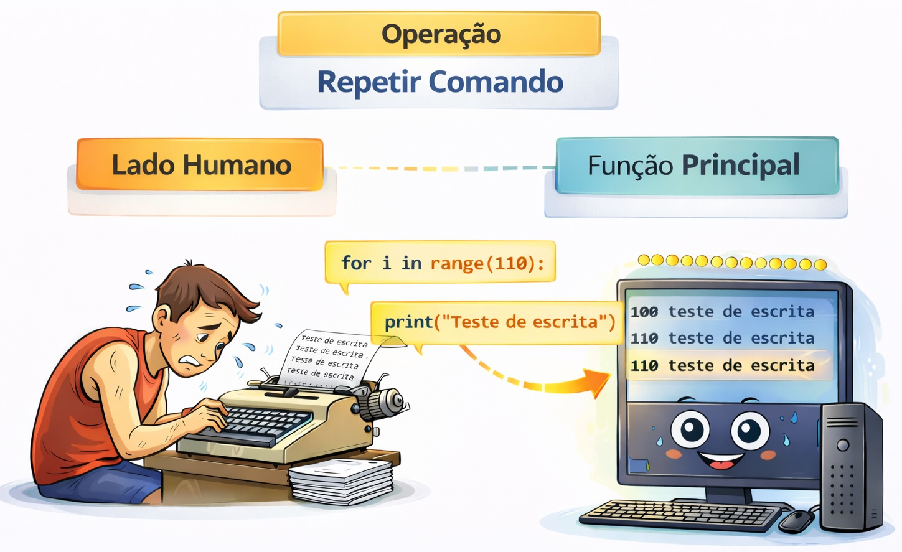
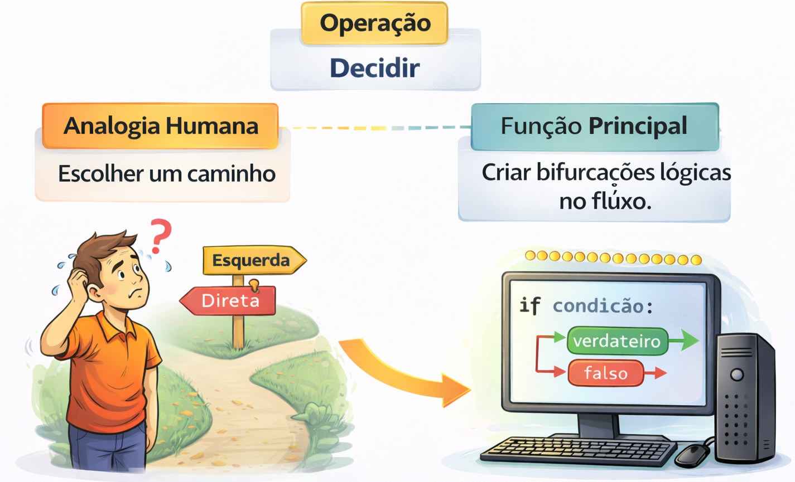

Aula 3 Estudo Detalhado: Estruturas de Repetição e Estruturas de Controle
3.1 ESTRUTURAS DE REPETIÇÃO

Computadores são ótimos em fazer tarefas repetitivas sem reclamar. Em vez de escrever o mesmo código dez vezes, usamos um laço (loop) que executa o bloco de comandos enquanto uma condição for mantida.
Tipos comuns:
while(enquanto) efor(para).Exemplo: Listar todos os nomes de uma lista de contatos ou repetir um alerta até que o usuário clique em “OK”.
3.1.1 O Laço WHILE (“enquanto”)
Utilizado quando não sabemos exatamente quantas vezes o código será executado, mas sabemos a condição de parada.
Pode criar a repetição ifinitamente, caso a condição de parada ninca for falsa.
3.1.2 O Laço FOR (“para cada”)
Em Python, o for é muito potente pois ele percorre sequências (listas, strings, intervalos). É a forma mais comum de computar (iterar) sobre dados.
# Exemplo com lista
frutas = ["Maçã", "Banana", "Uva"]
for fruta in frutas:
print(f"Eu gosto de {frutas}")OBS: aqui vamos usar também a função RANGE() que gera uma sequência de 0 a 4.
3.2 ESTRUTURAS DE CONTROLE

A inteligência de um código nasce aqui. Essa operação permite que o programa tome caminhos diferentes baseando-se em uma condição lógica (verdadeira ou falsa).
Lógica: SE (condição) então faça A; SENÃO, faça B.
Exemplo: Se a nota for maior que 7, o aluno está “Aprovado”; caso contrário, “Reprovado”.
3.4 Exercícios de Estruturas de Repeitção:
3.4.0.1 Exercício 1
Exercício 1) Escreva na tela todas as frutas existentes na variável do tipo "lista".
A variável do tipo lista contém ["Maçã", "Banana", "Uva"]3.4.0.2 Código exemplo 1
3.4.0.3 Exercício 2
Exercício 2) Utilize um laço for para imprimir todos os números de 10 até 100, mas pulando de 10 em 10 (ex: 10, 20, 30...).3.4.0.4 Código exercício 2
3.4.0.5 Exercício 3
Exercício 3) Aplicar uma operação matemática simples dentro de cada iteração.
Peça ao usuário para digitar um número inteiro.
Use um laço for para exibir a tabuada desse número de 1 a 10.
Captura de input() fora do loop e cálculo direto (numero * i) dentro do corpo do for3.4.0.6 Código exercício 3
# 1. Captura do input fora do loop (convertendo para inteiro)
numero = int(input("Digite um número para ver a tabuada: "))
print(f"\nTabuada do {numero}:")
# 2. Laço for de 1 a 10 (o range vai até 11 para incluir o 10)
for i in range(1, 11):
# 3. Cálculo direto dentro do corpo do for
resultado = numero * i
print(f"{numero} x {i} = {resultado}")3.4.0.7 Exercício 4
Aplicar uma operação matemática simples dentro de cada iteração.
Peça ao usuário para digitar um número inteiro.
Use um laço for para exibir a tabuada desse número de 1 a 10.
Captura de input() fora do loop e cálculo direto (numero * i) dentro do corpo do for3.4.0.8 Código exercício 4
# 1. Captura o número fora do loop (apenas uma vez)
numero = int(input("Digite um número para ver a tabuada: "))
print(f"Tabuada do {numero}:")
# 2. O laço for percorre os números de 1 a 10
for i in range(1, 11):
# 3. O cálculo é feito diretamente dentro do corpo do laço
resultado = numero * i
print(f"{numero} x {i} = {resultado}")
3.5 Exercícios de Estruturas de Controle:
3.5.0.1 Exercício 5
Exercício 5) Peça para o usuário digitar a sua idade. Se a idade for 18 ou mais, exiba a mensagem "Acesso Liberado". Caso contrário, exiba "Acesso Negado".3.5.0.2 Código exemplo 5
3.5.0.3 Exercício 6
Exercício 6) Peça ao usuário um número inteiro.
O programa deve informar se esse número é Par ou Ímpar.3.5.0.4 Código exercício 6
3.5.0.5 Exercício 7
Exercício 7) Receba uma temperatura em graus Celsius e escreva na tela a classificação:
- Menor que 15°C: "Frio"
- Entre 15°C e 25°C: "Agradável"
- Maior que 25°C: "Quente"3.5.0.6 Código exercício 7
3.5.0.7 Exercício 8
Exercício 8) Um produto custa R$ 100,00.
Se o cliente comprar 10 unidades ou mais, ele ganha 10% de desconto no valor total.
Se comprar menos, paga o valor integral.
Calcule e mostre o valor final da compra.3.5.0.8 Código exercício 8
# 1. Definição das variáveis base
preco_unitario = 100.00
quantidade = int(input("Quantas unidades você deseja comprar? "))
# 2. Cálculo do valor total sem desconto
valor_total = preco_unitario * quantidade
# 3. Verificação da condição de desconto
if quantidade >= 10:
# Aplica 10% de desconto
desconto = valor_total * 0.10
valor_final = valor_total - desconto
print(f"Você ganhou 10% de desconto! Valor economizado: R$ {desconto:.2f}")
else:
# Sem desconto
valor_final = valor_total
print("Quantidade insuficiente para desconto.")
# 4. Exibição do resultado
print(f"O valor final da sua compra é: R$ {valor_final:.2f}")